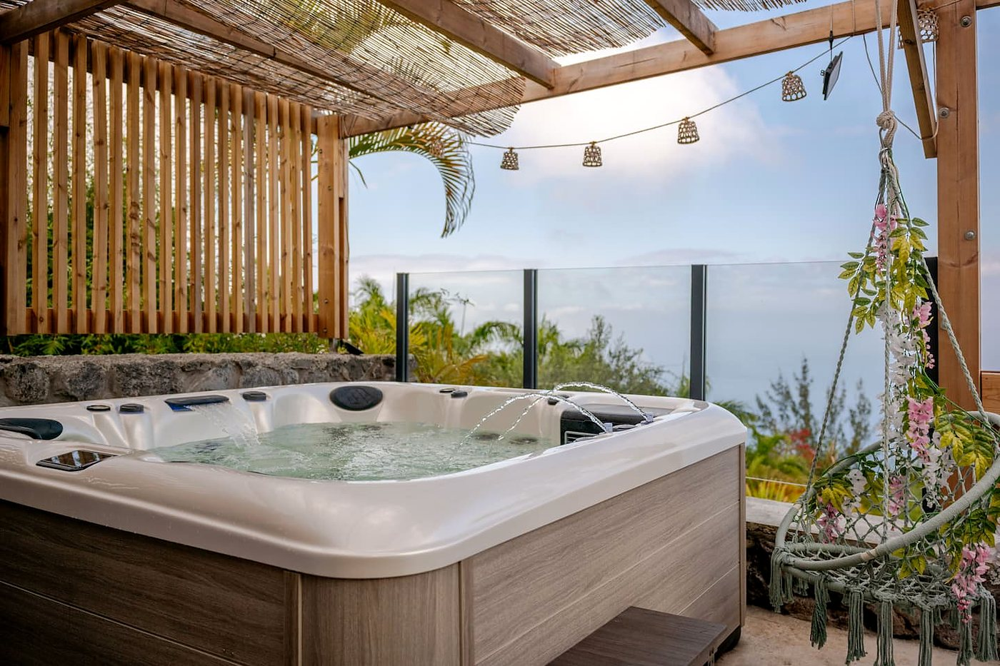

Logement indépendant · Saint-Leu, La Chaloupe
Jacuzzi privé en extérieur et coucher de soleil : un havre de paix à 800 m d’altitude, pour retrouver calme, fraîcheur et confort après une journée au soleil.

L'essentiel
Un jacuzzi extérieur de 6 places sous sa pergola, réservé à vos soirs de coucher de soleil, toute l’année de 8 h à 22 h.
Un appartement moderne en rez-de-jardin, entrée indépendante, cour aménagée et parking privatif.
À 800 m d’altitude, à La Chaloupe : air frais toute l’année, calme et nature, la mer à 20 minutes.
Les voyageurs saluent son accueil chaleureux, sa réactivité et ses bonnes adresses pour découvrir La Réunion.
L'écrin en images
Équipements
4 voyageurs · 1 chambre · 2 lits · 1 salle de bain et WC séparés
Un lit double dans la chambre, un canapé convertible et un matelas au sol, un lit bébé sur demande.
Ils en parlent
88 % des évaluations à 5 étoiles. Le jacuzzi, la vue et l’accueil reviennent dans la plupart des avis.
« Anne Gaelle est une hôte adorable toujours prête à donner un coup de main et à donner des recommandations. Je vous conseille vivement ce logement la montée dans les montagnes vaut le coup avec le coucher du soleil dans le jaccuzi juste sublime ! »
« Anne Gaelle est une hôte qui reste disponible. Concernant le logement, il est propre, la vue est magnifique, profiter du sunset dans le jacuzzi est assez reposant . L’endroit est très calme et nous avons à disposition billard, fléchette et table de ping pong . Je recommande ce logement si vous souhaitez de la tranquillité. »
« Excellent séjour ! Très bon accueil. Avec une vue magnifique. Et un espace de jeux apprécié par les enfants. Le jacuzzi et son emplacement où nous avons passé de très bons moments… »
« J’ai passé un très bon moment. Anne-Gaëlle a été très accueillante et réactive à mes messages, je recommande fortement. Une très belle vue depuis le jacuzzi, avec en bonus un magnifique coucher de soleil. On reviendra 🤗. »
« logement paisible niché en hauteur avec une très belle vue. le jaccuzzi est vraiment un plus , très agréable devant le coucher de soleil. le logement est très grand et le lit confortable. nous avons passé un agréable séjour. merci »
« Tout était parfait ! Le logement est de grande qualité, d'une propreté irréprochable et avec des équipements au top, … La vue est tout simplement superbe. Un immense merci à Anne-Gaëlle et son adorable famille pour son accueil extrêmement chaleureux et sa sympathie. Je recommande vivement … »
Extraits d'avis publiés sur l'annonce Airbnb du logement. Lire les 25 avis
Le quartier
Les loisirs de l’Écrin
Un espace jeux couvert avec billard, fléchettes et jeux pour enfants, une table de ping-pong, un jardin avec trampoline et des vélos pour les enfants. Au fond du jardin, quelques poules pondeuses et la tortue de la maison font partie du charme du lieu.
Infos pratiques
À partir de 15 h, en autonomie avec boîte à clé ou avec un accueil selon l’horaire
Avant 11 h ; arrivée anticipée ou départ tardif à convenir selon les disponibilités
Jusqu’à 4 voyageurs, en couple, en famille ou entre amis, lit bébé sur demande
Une route pentue, typique des hauts : garez-vous en descendant en marche arrière jusqu’à votre place, la vue vous récompense
Réservé aux occupants, de 8 h à 22 h ; une douche avant chaque bain garde l’eau limpide
Un secteur calme, à savourer en soirée ; logement réservé aux voyageurs inscrits sur la réservation
Une caméra déclarée filme uniquement l’entrée et les accès extérieurs ; l’intérieur et le jacuzzi restent privés
Séjours de 28 nuits et plus possibles, dépôt de bagages possible
Sur demande, selon vos dates
Collectée par l’hôte pour les réservations en direct
Contrat de location écrit et état descriptif du logement remis à chaque réservation directe
Réserver en direct
Anne-Gaëlle vous répond personnellement avec le tarif de votre séjour.
Par e-mail : écrire à l’Écrin